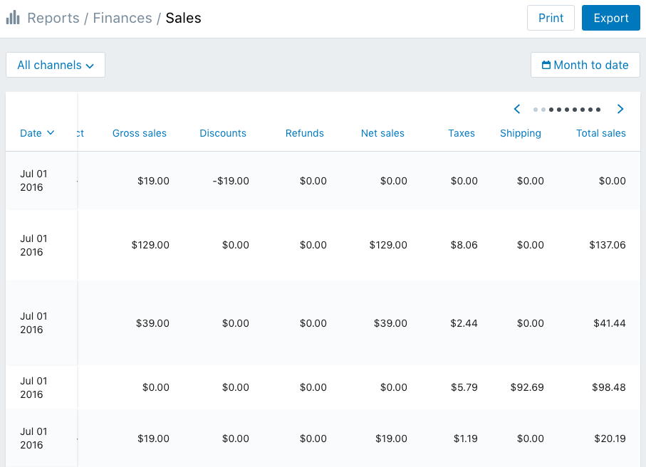
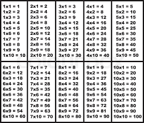
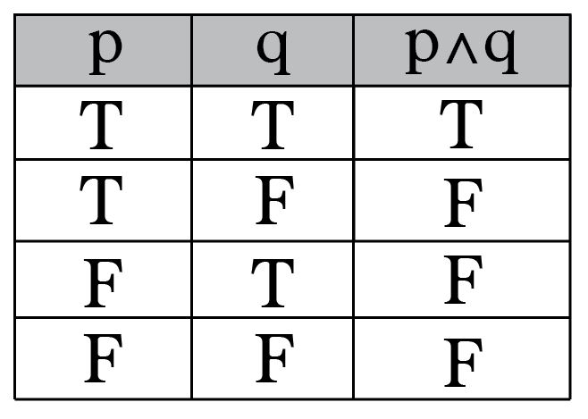
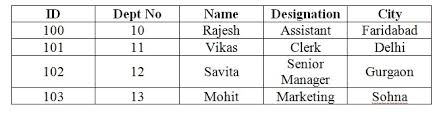

| Name | Surname | Favorite sauce | Hometown |
|---|---|---|---|
| Taariq | Bardien | Spur Sauce | Grassy Park |
| Evan | Christians | Tomato Sauce | Lotus River |
| Josh | Arendse | Tobasco Sauce | Athlone |
| Tyrone | Joubert | BBQ Sauce | Hanover Park |
| Michael Ian | de Necker | Special 21 Reserve | Cape Town |
| Natheer | Kamish | BBQ Sauce | Hanover Park |
| Jesse | Dilgee | Nandos | Ottery |
| Urick | Esau | Chilli Sauce | Athlone |
| Sheldon | Orgill | Chilli Sauce | Southfield |
| Zainab | Alexander | Salad Dressing | Belhar |
| Shanton | Waldien | Nandos Extra Hot Sauce | Mitchells Plain |
| Ashton | English | Peri Peri Sauce | Mitchells Plain |
| Warnita | Adams | Mushroom Sauce | Ravensmead |
| Daniel | Hawes | Peri Peri Sauce | Mitchells Plain |
| Litha | Melani | Nandos Sauce | Khayelitsha |
| Shakeel | Isaacs | Chilli Sauce | Mitchells Plain |
| Marlon | Demas | Perinaise | North Pine |
| Gcobisa | Nkonzo | Sweet Chilli Sauce | Gugulethu |
| Reagan | Beck | Chilli Sauce | Manenberg |
| Miguel | Kroukamp | Perinaise | Kuilsriver |
| Kaylem-Lee | Andrews | Nandos Hot Sauce | Mitchells Plain |
| Gedeon | Mzemba | Cheese Sauce | Paarl |
| John-Paul | Lewis | Sweet Chilli Sauce | Lotus River |
Publishing is used for cross-reference.
Mathematics is used for Arithmetic (Multiplication table) and Logic (Truth table).
 Software applications word processing applications, spreadsheet applications, presentation software and tables specified in HTML or another markup language

Database systems often store data in structures called tables; in which columns are data fields and rows represent data records
The periodic table is a tabular arrangement of the chemical elements, ordered by their atomic number, electron configuration, and recurring chemical properties, whose structure shows periodic trends.